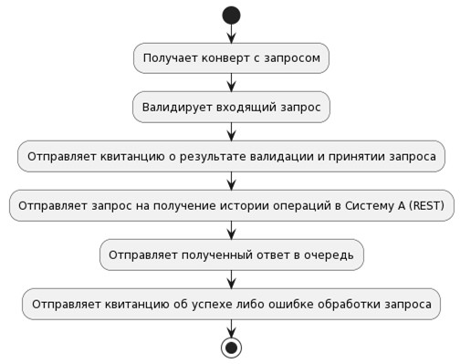

Максим Морев
Автор статьи, Технический директор

Ваганов Вадим
Участник статьи, Software Engineer, Head of Profession backend-разработки
Писали специально для публикации на TProger
Гайд по чистому коду: начало улучшений
Программная инженерия для Марка Симана (стр. 81. “Код, который умещается в голове”) — это методология, позволяющая в том числе убедиться, что программа работает так, как задумано. Я и Вадим согласны с Марком полностью.
Поэтому начнем с раскопок и опишем в README раздел “Назначение сервиса”. Опишем максимально просто в стиле линукс-пайпа бизнес-процесс "Обработки запроса из Платежной Системы".
Под раскопками я понимаю анализ документации, если таковая есть, и общение с экспертами, которые простыми словами могут объяснить, какую задачу и как должен решать сервис.
Получаем первый бранч и МР:
GutHub: codemonstersteam / mq-rest-sync-adapter
Для удобства чтения важное содержание выносится в текст.
Назначение сервиса
Сервис является синхронным перекладчиком запросов систем-потребителей в системы-поставщики.
Запросы поступают из систем-потребителей по очередям и обрабатываются сервисом-поставщиком согласно обобщенному бизнес-процессу: запросы из очереди направляются синхронно по REST'у в соответствующую систему, полученный ответ упаковывается в ответный конверт и отправляется в очередь ответа. Подробнее в описании каждого процесса.
Обработка запроса из Платежной Системы (PipelineServicePS.kt)
Получает конверт с запросом
Валидирует входящий запрос
Отправляет квитанцию о результате валидации и принятии запроса
Отправляет запрос на получение истории операций в Систему А (REST)
Отправляет полученный ответ в очередь
Отправляет квитанцию об успехе либо ошибке обработки запроса
Комментарий:
хорошей практикой является следующий подход:
- сначала вы описываете кратко в функциональном стиле какую задачу решает сервис и что происходит по процессу от поступления запроса в сервис до его завершения.
Get It Real — напишите короткую историю, которую поймет каждый.
Далее будет круто, если вы визуализируете процесс, это всегда упрощает понимание и дополняет краткие и ясные формулировки.
Времени вы потратите немного, а ваши коллеги вам скажут спасибо тысячу раз. Не упускайте такую возможность — сделать мир ИТ чуточку проще и понятней.
Такой подход учит начинающих разработчиков делать все правильно с самого начала и последовательно оставлять артефакты, которые помогут “братьям по оружию” в будущем — новички учатся на наших с вами репозиториях.

Поздравляю нас, первых результатов мы добились — нам понятно, как “микрач” должен работать.
Для того чтобы убедиться в том, что программа работает как задумано, напишем тесты.
Сначала напишем интеграционный тест на проверку работоспособности системы — это наш прагматичный метод. Интеграционный тест — дорогой тест, но он покроет максимум кода, позволит убедиться, что система работает, и придаст уверенности при рефакторинге. Бывают разные ситуации, но поверьте — этот метод спасал нам задницы много раз и он работает.
Для того чтобы протестировать функционал сервиса, мы будем использовать следующие инструменты:
- Testcontainers — поможет поднять IBM MQ в контейнерах на время исполнения тестов;
- Wiremock — прекрасный инструмент, чтобы поднять заглушку REST-ресурса на время исполнения тестов.
Сразу полезные ссылки по теме, в том числе видосик одного из контрибьюторов проекта Testcontainers:
Сергей Егоров — TestContainers — интеграционное тестирование с Docker
Testcontainers for Java
Testcontainers for Java / Files and volumes
Кстати, нам нужно будет уйти от IBM MQ на Kafka в рамках импортозамещения, а “плохой код” в нашем проекте служит хорошим примером той боли, которую можно испытать при переходе на другой брокер/очередь.
Была попытка сделать это первым шагом, чтобы сразу работать с актуальной технологией, но сделать это оказалось не так просто по причине плохого проектирования абстракций. Сейчас мы зависим от конкретного решения, но будем уходить от этого, что еще раз подтверждает ценность нашего улучшения.
Сначала мы улучшим код, после покажем как будет легко перейти с IBM MQ на другое решение, например, на Kafka.
Ближайший план такой:
- настроим тест-контейнеры;
- настроим wiremock;
- напишем интеграционный тест на бизнес-процесс.
Конфигурация тестового профиля
Врываемся с правилом бойскаута и зачищаем конфигурацию перед тестированием.
/src/test/resources/application-test.yml
Намеренно не выкладываем примеры плохого конфига, лучше тратить внимание и энергию на “правильные примеры”. Шума в нашей жизни сейчас и так достаточно.
Если вы посмотрите в бранче с ридмихой содержание файла конфигурации application-test.yml: codemonstersteam / mq-rest-sync-adapter/src/test/resources/application-test.yml
то увидите много лишнего в конфиге тестового профиля. Он содержит 49 строк, при этом в основном дублирует настройки основного профиля. Такая практика очень плоха, так как в какой-то момент времени приведет к такой рассинхронизации с основным профилем, в итоге ваши тесты станут давать ложноположительные или ложноотрицательные срабатывания. Такая ситуация может вылиться в катастрофу.
Рекомендуется иметь общие конфигурации в main/resources/application.yml,
а в тестовом профиле только те записи, что переопределяют основные. Как правило, application-test.yml содержит переменные, зависимые от окружения.
В результате получаем 14 строк конфигурации против 49 — хорошая оптимизация.
Конфиг содержит только то, что нужно нам для локального тестирования, и теперь есть смысл посмотреть на содержание:
codemonstersteam / mq-rest-sync-adapter/src/test/resources/application-test.yml
Обратите внимание, что с этим конфигом вы можете локально в докере поднять брокер и протестировать сервис
Приложим разные способы игр с докером IBM MQ в исходники:
codemonstersteam / mq-rest-sync-adapter/src/test/resources/docker/
Например, чтобы поднять докер с очередями нужно зайти в папку docker
cd src/test/resources/docker
Для локального тестирования посредством монтирования раздела поднимем эмкуху
docker run \
--env LICENSE=accept \
--env MQ_QMGR_NAME=QM1 \
--publish 1414:1414 \
--publish 9443:9443 \
--publish 9157:9157 \
--mount type=bind,source=./src/test/resources/docker/20-config.mqsc,target=/etc/mqm/20-config.mqsc \
icr.io/ibm-messaging/mq
Вуаля: у вас поднят брокер с очередями, которые он забирает из файла 20-config.mqsc
DEFINE QLOCAL(MY.TEST) REPLACE
DEFINE QLOCAL(IN.QUEUE.PS) REPLACE
DEFINE QLOCAL(OUT.QUEUE.PS) REPLACE
DEFINE QLOCAL(RECEIPT.QUEUE.PS) REPLACE
DEFINE QLOCAL(IN.QUEUE.MID) REPLACE
DEFINE QLOCAL(OUT.QUEUE.MID) REPLACE
DEFINE QLOCAL(RECEIPT.QUEUE.PS) REPLACE
codemonstersteam / mq-rest-sync-adapter/src/test/resources/docker/20-config.mqsc
Далее можно написать простой тест конфигурации подключения к брокеру. Отправим в тестовую очередь MY.TEST сообщение и прочитаем это сообщение из очереди. Это позволит убедиться в работоспособности нашей тестовой инфры.
После успешного тестирования инфры можем смело двигаться далее к более сложным тестам и инфраструктурным конфигурациям.
Обратите внимание на простой пример теста:
codemonstersteam / mq-rest-sync-adapter/src/test/kotlin/team/codemonsters/refactoringexample/service/MqSimpleTest.kt
И скрин для наглядности
package team.codemonsters.refactoringexample.service
import org.assertj.core.api.Assertions.assertThat
import org.junit.jupiter.api.Test
import org.springframework.beans.factory.annotation.Autowired
import org.springframework.jms.core.JmsTemplate
import org.springframework.test.context.ActiveProfiles
import team.codemonsters.refactoringexample.mq.BasicJmsRequest
@ActiveProfiles("test")
class MqSimpleTest(
@Autowired val jmsTemplate: JmsTemplate,
@Autowired val jmsPublisher: MqPublisher
) : AbstractIbmMqIntegrationTest() {
@Test
fun `should receive a message from MQ`() {
// Arrange
val message = "[]"
val queue = "MY.TEST"
// Act
publishToQueue(queue, message)
// Assert
val response = jmsTemplate.receiveAndConvert(queue).toString()
assertThat(response).isEqualTo(message)
}
private fun publishToQueue(queueName: String, messagePayload: String) {
jmsPublisher.sendToMq(
BasicJmsRequest(
correlationId = "01",
queue = queueName,
payload = messagePayload,
mapOf()
),
originalMsgId = "01"
)
}
}
Тест подмигивает нам зеленым светом, двигаемся дальше.
Комментарий: У тебя под рукой уже рабочий код и тест с контейнерами, если убрать наследование тестового класса от : AbstractIbmMqIntegrationTest() на 16 строке,
@ActiveProfiles("test")
class MqSimpleTest(
@Autowired val jmsTemplate: JmsTemplate,
@Autowired val jmsPublisher: MqPublisher
) : AbstractIbmMqIntegrationTest() {
и запустить из папки /src/test/resources/docker/
команду в терминале, которую мы описали выше.
А после запустить тест — в логах увидишь отклики на тест MQ-шки.
Когда работаешь с легаси или кодом без тестов и без документации на проекте с одним РП (Руководителем Проекта), такой метод тебе может пригодиться, чтобы понять, что ты действительно все сделал правильно, чистокодец.
Важная мысль:
Рекомендуем тестировать новые инструменты, библиотеки — это поможет вам сократить расходы и на раннем этапе убедиться, что разработка пошла в правильном направлении. Чаще всего разработчики не пишут тесты на новые инструменты, либы, а зря, это как минимум отличный способ разобраться в них и достоверно узнать, что ты верно понимаешь и используешь новинку.
Настраиваем тест-контейнеры
Нам понадобится родная документация фрэймворка:
Testcontainers for Java: container lifecycle management using JUnit 5
Testcontainers for Java: Examples
Testcontainers for Java: Examples
Добавляем импорт либ для тестирования на тест-контейнерах в build.gradle, строка 35.
// test
testImplementation 'org.springframework.boot:spring-boot-testcontainers:3.1.4'
testImplementation 'com.maciejwalkowiak.spring:wiremock-spring-boot:1.0.1'
testImplementation 'org.springframework.boot:spring-boot-starter-test'
testImplementation 'io.projectreactor:reactor-test'
Исследуем документацию про Управление жизненным циклом контейнеров Testcontainers с использованием JUnit 5
Пробуем запустить паттерн Singleton Containers для запуска тестов на одном контейнере. Для этого создадим класс, можно абстрактный
- Создаем базовый класс интеграционного теста (он может быть абстрактным) AbstractIbmMqIntegrationTest
@Tag("integration-test")
@SpringBootTest(webEnvironment = SpringBootTest.WebEnvironment.RANDOM_PORT)
abstract class AbstractIbmMqIntegrationTest {
companion object {
val envVariables = mapOf("LICENSE" to "accept", "MQ_QMGR_NAME" to "QM1")
val container = GenericContainer("icr.io/ibm-messaging/mq")
.withExposedPorts(1414, 1414)
.withExtraHost("locahost", "0.0.0.0")
.withEnv(envVariables)
.withClasspathResourceMapping(
"docker/20-config.mqsc",
"/etc/mqm/20-config.mqsc",
BindMode.READ_ONLY
)
@JvmStatic
@DynamicPropertySource
fun setIbmMqProperties(registry: DynamicPropertyRegistry) {
registry.add("ibm.mq.connName", Companion::connName)
}
private fun connName() = "${container.host}(${container.firstMappedPort})"
@JvmStatic
@BeforeAll
internal fun setUp() {
container.start()
}
}
}
в котором описываем сам контейнер, строка 16.
val envVariables = mapOf("LICENSE" to "accept", "MQ_QMGR_NAME" to "QM1")
val container = GenericContainer("icr.io/ibm-messaging/mq")
.withExposedPorts(1414, 1414)
.withExtraHost("locahost", "0.0.0.0")
.withEnv(envVariables)
.withClasspathResourceMapping(
"docker/20-config.mqsc",
"/etc/mqm/20-config.mqsc",
BindMode.READ_ONLY
)
Обратите внимание на строку 21 — так можно подмонтировать файл и сконфигурить стандартный контейнер.
Эта полезная фича описана в доке Testcontainers for Java: Files and volumes
Более подробно про конфигурацию докер-контейнера IBM MQ написано далее в статье. Несмотря на то что это уже умирающий для нас брокер, больше пользы вам принесет сам метод, а не инструмент.
Устанавливаем переменную окружения для подключения к mq
Метод setIbmMqProperties, строка 29, заполняем ibm.mq.connName.
@JvmStatic
@DynamicPropertySource
fun setIbmMqProperties(registry: DynamicPropertyRegistry) {
registry.add("ibm.mq.connName", Companion::connName)
}
private fun connName() = "${container.host}(${container.firstMappedPort})"
Запускам контейнер при создании класса
Функция на строке 37 запускает контейнер перед запуском тестов.
2. Пишем тест на инфру
Пишем простой тест на фрэймворк тест-контейнеров, чтобы протестировать выбранный инструмент и качество документации.
Убедимся, что этому инструменту можно доверять, затратив минимум внимания и энергии.
Ключевыми показателями успеха в данном случае являются:
- простота документации;
- простота реализации примера по документации;
- работоспособность экспериментального кода по документации.
Короче, чем меньше времени тратится на то, чтобы получить рабочий результат и в процессе отсутствуют такие ритуалы как танцы с бубном, тем выше оценка инструмента. Получаем класс, который вы уже видели:
MqSimpleTest
@ActiveProfiles("test")
class MqSimpleTest(
@Autowired val jmsTemplate: JmsTemplate,
@Autowired val jmsPublisher: MqPublisher
) : AbstractIbmMqIntegrationTest() {
@Test
fun `should receive a message from MQ`() {
// Arrange
val message = "[]"
val queue = "MY.TEST"
// Act
publishToQueue(queue, message)
// Assert
val response = jmsTemplate.receiveAndConvert(queue).toString()
assertThat(response).isEqualTo(message)
}
private fun publishToQueue(queueName: String, messagePayload: String) {
jmsPublisher.sendToMq(
BasicJmsRequest(
correlationId = "01",
queue = queueName,
payload = messagePayload,
mapOf()
),
originalMsgId = "01"
)
}
}
Запускаем тест и получаем зачаток greeny-котлин приложения.
Тест работает, доки качественные, пляски с бубном не понадобились. Отлично.
Давно используем такой подход и вам рекомендую.
Проверено: Фрэймворк testcontainers очень помогает писать интеграционные тесты.
Настраиваем WireMock
Для того чтобы локально в тестовом окружении поднять и сконфигурировать заглушку для REST-ресурса можно выделить два классных инструмента:
Обратите внимание на эти мощные продукты с активным сообществом. Поскольку обзор этих инструментов выходит за рамки статьи, то будут описаны конфигурация WireMock в нашем сервисе и простой тест на него, чтобы убедиться в предсказуемой работе инструмента.
Понятно, что каждый раз так мы не делаем, но в рамках этой статьи хочется показать прагматичный метод работы с хоть и хорошо проверенными сообществом, но новыми для проекта инструментами.
В документации Wiremock находим рекомендацию того, как нам с ним работать в Spring:
Using WireMock with Spring Boot
codemonstersteam / mq-rest-sync-adapter
Добавляем зависимость в build.gradle
//test
testImplementation 'org.springframework.boot:spring-boot-testcontainers:3.1.4'
testImplementation 'com.maciejwalkowiak.spring:wiremock-spring-boot:1.0.1'
testImplementation 'org.springframework.boot:spring-boot-starter-test'
testImplementation 'io.projectreactor:reactor-test'
Добавляем конфигурацию ответа сервиса rest-api-gateway
codemonstersteam / mq-rest-sync-adapter/src/test/resources/.../mappings /wallet-balance.json
Проверяем, что мок-сервер поднимается и подгружает конфигурации ответов из файлов.
Пишем тест на инструмент в классе
WireMockWithStubsTest
@ActiveProfiles("test")
@SpringBootTest
@EnableWireMock(ConfigureWireMock(name = "rest-api-gateway", property = "rest.configs.api-gateway.url"))
class WireMockStubsTest {
@InjectWireMock("rest-api-gateway")
private lateinit var restApiGateway: WireMockServer
lateinit var client: WebTestClient
@BeforeEach
fun setUp() {
client = WebTestClient.bindToServer().baseUrl(restApiGateway.baseUrl()).build()
}
@Test
fun wireMockSuccess() {
client.post().uri("/api/client/Api-clientId-01/wallet/balance")
.bodyValue("{}")
.exchange()
.expectStatus().isOk
}
}
Все по документации.
Строкой 15 мы описываем инстанс мок-сервера
@EnableWireMock(ConfigureWireMock(name = "rest-api-gateway", property = "rest.configs.api-gateway.url"))
````
с именем rest-api-gateway, который определяет url конфигурации рест-ресурса
**rest.configs.api-gateway.url.**
Этот url загружается в контекст приложения из /src/main/resources/application.yml, строка 81
[codemonstersteam / mq-rest-sync-adapter/src/main/resources/application.yml](https://github.com/codemonstersteam/mq-rest-sync-adapter/blob/feature/01-integration-tests/src/main/resources/application.yml#L81)
```YML
#REST configuration
rest:
configs:
api-gateway:
url: http://localhost:8080
basic-auth:
user: admin
password: password
operations:
client-reg: /api/client/register
client-wallet-balance: /api/client/${Api-clientId}/wallet/balance
client-wallet-status: /api/client/${Api-clientId}/wallet/status
Он используется в классе RestConfiguration, а далее используется страшным классом RESTClient, который создатель наделил монструозным методом на 80 строк sendRequest.
Таким образом мы понимаем, что приложение на шаге
| Отправить запрос история операций по кошельку банка (в “Систему А” по REST)
будет обращаться к рест-ресурсу по конфигурации rest.configs.api-gateway.
Мы сейчас настроим и протестируем необходимую нам заглушку. 21 строка конфигурирует WebTestClient на url рест-ресурса, который мокает wiremock.
@BeforeEach
fun setUp() {
client = WebTestClient.bindToServer().baseUrl(restApiGateway.baseUrl()).build()
}
Строка 26 тестирует конфигурацю мок-сервера,
@Test
fun wireMockSuccess() {
client.post().uri("/api/client/Api-clientId-01/wallet/balance")
.bodyValue("{}")
.exchange()
.expectStatus().isOk
}
которую он подтягивает из
codemonstersteam / mq-rest-sync-adapter/src/test/resources/.../mappings/wallet-balance.json
{
"mappings": [
{
"request": {
"method": "POST",
"url": "/api/client/Api-clientId-01/wallet/balance"
},
"response": {
"status": 200,
"headers": {
"Content-Type": "application/json"
},
"jsonBody": {
"status": "success",
"actualTimestamp": 1607449018829,
"data": {
"createTime": 1600443296227,
"operationId": "01",
"balance": {
"value": 999.9,
"currency": "rub"
}
}
}
}
}
]
}
Конфигурация содержит описание запроса:
И она же содержит описание ответа:
"response": {
"status": 200,
"headers": {
"Content-Type": "application/json"
},
"jsonBody": {
"status": "success",
"actualTimestamp": 1607449018829,
"data": {
"createTime": 1600443296227,
"operationId": "01",
"balance": {
"value": 999.9,
"currency": "rub"
}
}
}
}
Подробнее про файлы конфигурации запросов, ответов, матчинга ответов в зависимости от параметров в теле запроса или заголовках, написано в документации wiremock:
WireMock: Request Matching
Тест подмигнул нам грини-глазом — в итоге у нас два теста на инфру успешны:
- мы можем отправить сообщение в очередь, можем прочитать сообщение из очереди;
- можем отправлять http-запрос на REST-ресурс и получать ответ на этот запрос.
Фух, можно тестировать логику приложухи.
Пишем интеграционные тесты
Чтобы убедиться в работоспособности приложения по бизнес-процессу “Обработки запроса из Платежной Системы” (PipelineServicePS.kt) вспомним описание:
Получает конверт с запросом
Валидирует входящий запрос
Отправляет квитанцию о результате валидации и принятии запроса
Отправляет запрос на получение истории операций в Систему А (REST)
Отправляет полученный ответ в очередь
Отправляет квитанцию об успехе либо ошибке обработки запроса
Давайте первым напишем интеграционный тест, который отработает недоступность REST-ресурса.
Красным выделен шаг, на котором происходит сбой из-за недоступности REST-ресурса.
Оранжевым выделен шаг, который должен на этот сбой отреагировать ответом с ошибочным статусом.
PipelineServicePsFailTest
codemonstersteam / mq-rest-sync-adapter/.../service/PipelineServicePsFailTest.kt
@Test
fun `Pipeline failure due to unavailability of rest resource`() {
// PipelineServicePS
// Arrange
val requestQueue = "IN.QUEUE.PS"
val message = createRequestEnvelope(requestQueue)
val originalId = "01"
val responseQueue = "OUT.QUEUE.PS"
val receiptQueue = "RECEIPT.QUEUE.PS"
// Act
publishToQueue(message, originalId)
// Assert
assertResponsesInQueues(receiptQueue, responseQueue)
}
После изучения кода бизнес-процесса в PipelineServicePS, уточнили поведение сервиса при недоступности REST-ресурса у эксперта: в случае сбоя на шаге отправки REST-запроса квитанция на финальном шаге (строка 69 в тесте) должна содержать сообщение об ошибке.
private fun assertResponsesInQueues(receiptQueue: String, responseQueue: String) {
assertReceiptError(receiptQueue)
assertReceiptAccepted(receiptQueue)
assertResponse(responseQueue)
}
Код, который описывает “пайплайн” бизнес-процесса, работает некорректно — он возвращает Success.
Исправим функцию assertReceiptError так, чтобы она была достоверной технической документацией и утверждала правильное поведение системы. Тест теперь красный, именно это нам и нужно.
Исходник теста:
private fun assertReceiptError(receiptQueue: String) {
val receiptString = jmsTemplate.receiveAndConvert(receiptQueue).toString()
val receipt = JsonUtil.fromString(receiptString, ReceiptPs::class.java)
SoftAssertions.assertSoftly { softly: SoftAssertions ->
softly.assertThat(receipt.flag).isEqualTo(ReceiptStatus.ERROR)
softly.assertThat(receipt.errorCode).isNull()
}
}
Строка 112 — ReceiptStatus.ERROR — ожидаемый статус в квитанции.
Тест защищает код от бага красным оком контроля качества интеграционного теста.
В следующем изменении мы это исправим.
До обсуждения с экспертами предполагалось, что сервис работает верно и тестировался на успешный статус квитанции, а ошибка проверялась в контексте ответного конверта из очереди ответов, что было неверно.
Изменения: опишем явно слушатель и уберем лишние классы
Во время тестирования бизнес-процесса, который описан в сервисе PipelineServicePS, было выявлено, что слушатели не принимают сообщений.
Слушатели динамично создаются в MqServiceConfiguration.
Первое, что всегда стоит просить сделать разработчиков — описать явно слушатели, это просто и наглядно.
Вместо кода на 64 строки, который нужно осознать, простить и принять, вытащим вам кишки этого сервиса:
@Bean
fun create MqServiceConfigurer(environment: ConfigurableEnvironment): BeanDefinitionPostProcessor {
return MyPostProcessor(environment)
}
class MyPostProcessor(val environment: ConfigurableEnvironment): BeanDefinitionPostProcessor {
private val log = LoggerFactory.getLogger(MYPostProcessor::class.java)!!
override fun postProcessorBEanFactory(beanFactory: ConfigurableListableBeanFactory) {
}
override fun postProcessBeanDefinitionRegistry(registry: BeanDefinitionRegistry) {
val mqConfiguration = Binder.get(environment)
.bind(MQ_PREFIX, Bindable.of(MqConfiguration::class.java))
.orElseThrow{IlllegalStateException()}
mqConfiguration.configs.forEach { (k,v) ->
log.debug("Adding MQ Service for key: ${k}")
registry.registerBeanDefinition(getBeanName(k), buildBeanDefinition(v, MqHttpService::class.java))
}
}
private fun buildBeanDefinition(config: MqServiceCfg, clazz: Class<out Any>): BeanDefinition {
return BeanDefinitionBuilder.genericBeanDefinition(clazz).setLazyInt(true)
.addConstructorArgReference("mqPublisher")
.addConstructorArgValue(config)
.addConstructorArgReference("restConfiguration")
.addConstructorArgReference("jmsListenerContainerFactory")
.addConstructorArgReference("pipelineServiceSelector")
.beanDefinition;
}
}
Мы можем просто описать слушатель на очередь запросов по бизнес-процессу четырьмя строчками кода в классе PipelineServicePS:
@JmsListener(destination = "\${mq.configs.ps.REQ}")
fun receiveBalance(message: Message<Any>) {
receiveMessage(message)
}
Даже если у нас 5-7 процессов, лучше описать слушатель явно — у нас появляется очевидная точка входа, такой код проще понять.
комментарий: В будущем мы перенесем функционал “слушателя” в класс-слушатель, который будет тонкой точкой входа в бизнес-процесс. Таких входов может быть несколько: REST, MQ и далее. Если посмотрим на гексагональную архитектуру: получим те самые адаптеры — точки входа в бизнес логику.
Подытожим: мы ушли от универсального решения — удалили классы конфигурации слушателей, они не нужны. Добавляя новый бизнес-процесс, вы всегда будете добавлять код и конфигурацию, лучше делать это максимально просто.
К универсальным решениям стоит относиться настороженно там, где речь идет об имплементации бизнес-логики. Сама бизнес-логика уникальна, чем проще будет описан бизнес-процесс, тем лучше. Чем проще будет обнаружить точки входа в бизнес-логику, тем лучше.
Имеем минус классы:
MqHttpService.kt deleted
PipelineServiceSelector.kt deleted
MqServiceConfiguration.kt deleted
Прибавилось: 4 строчки кода
Хороший результат.
В дальнейших статьях вы увидите, как мы упростим код и протестируем бизнес-логику юнит-тестами, минимизируя количество интеграционных тестов.
PipelineServicePsSuccessTest
codemonstersteam / mq-rest-sync-adapter/src/test/kotlin/.../service/PipelineServicePsSuccessTest.kt
Разбираем интеграционный тест успешного выполнения бизнес-процесса.
Вспомним пайплайн бизнес-процесса:
Получает конверт с запросом
Валидирует входящий запрос
Отправляет квитанцию о результате валидации и принятии запроса
Отправляет запрос на получение истории операций в Систему А (REST)
Отправляет полученный ответ в очередь
Отправляет квитанцию об успехе либо ошибке обработки запроса
Обобщая, тестируемое поведение системы (SUT — System Under Test) должно быть таким: на вход в очередь запросов мы отправляем конверт с запросом и проверяем, что в ответных очередях есть сообщения.
Очередь для квитанций содержит два сообщения:
- сообщение об успешном принятии запроса
- сообщение об успехе обработки запроса
Очередь для ответа содержит результат взаимодействия с REST-ресурсом.
Сначала рассмотрим тест, который проверяет, что система работает правильно. Потом рассмотрим конфигурацию тестовой среды, которая обеспечит успешное выполнение этого теста.
successful wallet balance request
Название понятное и сообщает нам, что тест проверяет успешный запрос баланса кошелька.
@Test
@Tag("PipelineServicePS")
fun `successful wallet balance request`() {
// Arrange
val requestQueue = "IN.QUEUE.PS"
val message = createRequestEnvelope(requestQueue)
val originalId = "01"
val responseQueue = "OUT.QUEUE.PS"
val receiptQueue = "RECEIPT.QUEUE.PS"
// Act
publishToQueue(message, originalId)
// Assert
assertResponsesInQueues(receiptQueue, responseQueue)
}
Простой понятный тест, который является документацией, написан по паттерну 3A Arrange, Act, Assert и тестирует ожидаемое успешное поведение системы.
Коротко опишем суть паттерна 3А.
Arrange — в этом блоке мы настраиваем условия для теста: подготавливаем сообщение-конверт с запросом createRequestEnvelope (строка 66), чтобы отправить его в очередь запросов IN.QUEUE.PS.
Act — воздействуем на SUT, отправляем сообщение в очередь запросов publishToQueue (строка 71).
Assert — проверяем утверждения с фактическими данными, которые выдает SUT, посредством вызова метода с понятным названием assertResponsesInQueues (утвердить ответ в очередях), строка 73.
Рекомендуем блок утверждений сводить к одному понятному утверждению. Название метода-утверждения должно однозначно сказать, что мы проверяем, без необходимости смотреть в его реализацию.
Пробежимся по ключевым методам теста: createRequestEnvelope, publishToQueue, assertResponsesInQueues, убедимся, что наш тест является документацией и его легко читать и понимать.
createRequestEnvelope
private fun createRequestEnvelope(queueName: String): BasicJmsRequest<String> {
val jmsHeaders: Map<String, String> = createJmsHeaders()
val request = createValidRequest()
val correlationId = "correlationId"
val envelope = createEnvelope(correlationId, request)
val payloadJsonString = JsonUtil.toJson(envelope)
return BasicJmsRequest(
correlationId = correlationId,
queue = queueName,
payload = payloadJsonString,
headers = jmsHeaders
)
}
Этот метод просто и понятно описывает процесс создания корректного конверта с запросом.
Рассматривать подробно логику создания запроса мы не будем, чтобы эта статья могла уместиться в голове. В продолжении при рефакторинге мы будем касаться бизнес-логики отдельно.
publishToQueue
private fun publishToQueue(message: BasicJmsRequest<String>, originalId: String) {
jmsPublisher.sendToMq(
message, originalMsgId = originalId
)
}
Метод прост: используем jmsPublisher — MqPublisher для отправки сообщения в очередь.
assertResponsesInQueues
private fun assertResponsesInQueues(receiptQueue: String, responseQueue: String) {
assertReceiptSuccess(receiptQueue)
assertReceiptAccepted(receiptQueue)
assertResponse(responseQueue)
}
Проверяем, что бизнес-процесс отработал корректно: в очереди для квитанций две квитанции со статусами ReceiptStatus.SUCCESS и ReceiptStatus.ACCEPTED, а также в очереди ответа ожидаемое сообщение ответа сервиса.
assertReceiptSuccess
Тестируем факт чтения квитанции об успехе операции.
private fun assertReceiptSuccess(receiptQueue: String) {
val receiptString = jmsTemplate.receiveAndConvert(receiptQueue).toString()
val receipt = JsonUtil.fromString(receiptString, ReceiptPs::class.java)
SoftAssertions.assertSoftly { softly: SoftAssertions ->
softly.assertThat(receipt.flag).isEqualTo(ReceiptStatus.SUCCESS)
softly.assertThat(receipt.description).isNull()
}
}
assertReceiptAccepted
Тестируем факт чтения квитанции о том, что запрос получен и взят в работу.
private fun assertReceiptAccepted(receiptQueue: String) {
val receiptString = jmsTemplate.receiveAndConvert(receiptQueue).toString()
val receipt = JsonUtil.fromString(receiptString, ReceiptPs::class.java)
SoftAssertions.assertSoftly { softly: SoftAssertions ->
softly.assertThat(receipt.flag).isEqualTo(ReceiptStatus.ACCEPTED)
softly.assertThat(receipt.errorCode).isNull()
}
}
assertResponse
Проверяем ответ в очереди ответа, должно быть все понятно из содержания метода.
private fun assertResponse(responseQueue: String) {
val responseString = jmsTemplate.receiveAndConvert(responseQueue).toString()
val responseEnvelope = JsonUtil.fromString(responseString, HttpResponseEnvelope::class.java)
assertThatResponse(responseEnvelope)
}
assertThatResponse
Добрались до содержания, в котором видно, какой именно ответ мы ожидаем получить в очереди ответов.
private fun assertThatResponse(response: HttpResponseEnvelope) {
SoftAssertions.assertSoftly { softly: SoftAssertions ->
softly.assertThat(response.correlationId).isEqualTo("correlationId")
softly.assertThat(response.status).isEqualTo(200)
softly.assertThat(response.message).isEqualTo("OK")
softly.assertThat(response.method).isEqualTo("POST")
softly.assertThat(response.service).isEqualTo("api-gateway")
softly.assertThat(response.operation).isEqualTo("client-wallet-balance")
softly.assertThat(response.body)
.contains("\"data\":{\"createTime\":1600443296227,\"operationId\":\"01\",\"balance\":{\"value\":999.9,\"currency\":\"rub\"}}")
}
}
Рекомендуем использовать в тестах Soft Assertions
Обратите внимание: во всех блоках с проверкой утверждений, например как в assertThatResponse, мы рекомендуем использовать Soft Assertions.
Это удобная фича, которая позволяет увидеть все фэйлы теста одним сообщением. Такая есть в fluent assertions java-либе assertJ, которую мы предпочитаем для работы с утверждениями, и рекомендуем разработчикам. Блок теста на проверку ответа с Soft Assertion выглядит так:
assertThatResponse
private fun assertThatResponse(response: HttpResponseEnvelope) {
SoftAssertions.assertSoftly { softly: SoftAssertions ->
softly.assertThat(response.correlationId).isEqualTo("correlationId")
softly.assertThat(response.status).isEqualTo(200)
softly.assertThat(response.message).isEqualTo("OK")
softly.assertThat(response.method).isEqualTo("POST")
softly.assertThat(response.service).isEqualTo("api-gateway")
softly.assertThat(response.operation).isEqualTo("client-wallet-balance")
softly.assertThat(response.body)
.contains("\"data\":{\"createTime\":1600443296227,\"operationId\":\"01\",\"balance\":{\"value\":999.9,\"currency\":\"rub\"}}")
}
}
Все ошибки краснеют в терминале сразу, показывая, где утверждения в тестах разошлись с фактами:
org.assertj.core.error.AssertJMultipleFailuresError:
MultipleFailures (2 failures)
-- failure 1 --
expected: "client-reg" but was: "client-wallet-balance"
at PipelineServicePsSuccessTest.assertThatResponse\(lambda\)
-- failure 2 --
expected: "{"status":"success","actualTimestamp"160744901...}"
but was: "{"status":"success","actualTimestamp"160744901...}"
Это удобнее, чем править утверждение за утверждением и перезапускать тест множество раз.
Конфигурация успешного теста
Контейнер Ibm MQ
Данная конфигурация отличается от конфигурации MqSimpleTest, которая использовалась для тестирования фрэймворка TestContainers. Простой инфраструктурный тест опирался на шаблон Singleton Container, а нам понадобится запустить тесты изолированно друг от друга.
Для того чтобы протестировать атомарно ошибочный и успешный пути исполнения тестов, запустим каждый тест со своим контейнером. Это дорого по ресурсам (cpu, mem), но мы гарантированно получаем изолированный запуск тестов Testcontainers container lifecycle management using JUnit 5.
Для простоты выбираем подход использования методов обратного вызова жизненного цикла JUnit 5 Using JUnit 5 lifecycle callback methods
@ActiveProfiles("test")
@Tag("integration-test")
@SpringBootTest(webEnvironment = SpringBootTest.WebEnvironment.RANDOM_PORT)
@EnableWireMock(ConfigureWireMock(name = "rest-api-gateway", property = "rest.configs.api-gateway.url"))
class PipelineServicePsSuccessTest(
@Autowired val jmsTemplate: JmsTemplate,
@Autowired val jmsPublisher: MqPublisher,
@Autowired private val mqConfiguration: MqConfiguration,
) {
private val mqConfig: MqServiceCfg = mqConfiguration.configs["ps"]!!
companion object {
private val ibmMqContainer = IbmMqContainer.container()
@JvmStatic
@DynamicPropertySource
fun setIbmMqProperties(registry: DynamicPropertyRegistry) {
registry.add("ibm.mq.connName") { connName() }
}
private fun connName() = "${ibmMqContainer.host}(${ibmMqContainer.firstMappedPort})"
@JvmStatic
@BeforeAll
internal fun startContainer() {
ibmMqContainer.start()
}
@JvmStatic
@AfterAll
internal fun stopContainer() {
ibmMqContainer.stop()
}
}
На строке 38 мы создаем контейнер, описанный в классе IbmMqContainer.
Класс IbmMqContainer, содержание его вам знакомо:
Сам класс описан ниже, чтобы не отвлекать внимание от общей конфигурации.
В строках 40-46 устанавливаем переменную среды "ibm.mq.connName" для подключения к IBM MQ.
@JvmStatic
@DynamicPropertySource
fun setIbmMqProperties(registry: DynamicPropertyRegistry) {
registry.add("ibm.mq.connName") { connName() }
}
private fun connName() = "${ibmMqContainer.host}(${ibmMqContainer.firstMappedPort})"
Строки 48-58 запуск и остановка контейнеров
@JvmStatic
@BeforeAll
internal fun startContainer() {
ibmMqContainer.start()
}
@JvmStatic
@AfterAll
internal fun stopContainer() {
ibmMqContainer.stop()
}
Запуск контейнера
JUnit 5 сначала вызовет метод startContainers(), а затем выполнит все тесты, помеченные аннотацией @Test.
Мы использовали метод обратного вызова @BeforeAll JUnit 5 для запуска контейнера.
Остановка контейнера
Как только все тесты будут выполнены, JUnit 5 вызовет метод обратного вызова @AfterAll (строка 55)
Содержание класса IbmMqContaier
class IbmMqContainer {
companion object {
fun container(): GenericContainer<*> {
val envVariables = mapOf("LICENSE" to "accept", "MQ_QMGR_NAME" to "QM1")
return GenericContainer("icr.io/ibm-messaging/mq")
.withExposedPorts(1414, 1414)
.withExtraHost("locahost", "0.0.0.0")
.withEnv(envVariables)
.withClasspathResourceMapping(
"docker/20-config.mqsc",
"/etc/mqm/20-config.mqsc",
BindMode.READ_ONLY
)
}
}
}
Класс IbmMqContaier содержит конфигурацию контейнера.
Конфигурацию мы описали, опираясь на рекомендацию в документации ibmcom/mq из докер-хаба Docker Hub: ibmcom/mq, которая в свою очередь приводит нас на доки по использованию usage documentation.
Из интересного: подкладываем конфигурацию очередей из файла, как рекомендуют в разделе Customizing the queue manager configuration посредством монтирования.
Пишем содержание теста на успешное исполнение:
Конфигурация WireMock
В предыдущем разделе мы подробно рассмотрели и протестировали необходимую нам конфигурацию WireMock.
@ActiveProfiles("test")
@Tag("integration-test")
@SpringBootTest(webEnvironment = SpringBootTest.WebEnvironment.RANDOM_PORT)
@EnableWireMock(ConfigureWireMock(name = "rest-api-gateway", property = "rest.configs.api-gateway.url"))
class PipelineServicePsSuccessTest(
@Autowired val jmsTemplate: JmsTemplate,
@Autowired val jmsPublisher: MqPublisher,
@Autowired private val mqConfiguration: MqConfiguration,
)
В тесте прописываем проверенную конфигурацию 29-ой строкой:
@EnableWireMock(ConfigureWireMock(name = "rest-api-gateway", property = "rest.configs.api-gateway.url"))
Этого достаточно, чтобы успешно протестировать бизнес-процесс.
Заключение
Программная инженерия для Марка Симана (стр. 81. “Код, который умещается в голове”) — это методология, позволяющая убедиться в том, что программа работает так, как задумано.
Чего мы добились, используя программную инженерию:
- мы протестировали инструменты и инфраструктуру;
- улучшили кодовую базу, внеся минимальные изменения;
- для простоты протестировали один бизнес-процесс интеграционными тестами с использованием testcontainers и wire-mock.
Какие уроки стоит вынести:
- для того чтобы защитить себя перед рефакторингом, напишите интеграционный тест на успешное выполнение бизнес-процесса и на один фэйл;
- пишите тесты на новые инструменты, инфраструктуру — это первые базовые и простые шаги, которые гарантируют вам уверенное продвижение к последующим улучшениям; проверено — работает;
- рефакторинг и упрощение усложненных решений часто помогают выявить ошибки реализации.
Теперь мы готовы к изменениям и можно все перефигачить чистым кодом, а затем просто перейти на Kafka вместо IBM MQ.
Заметки про тестирование:
Более подробно про лучшие практики 3A рекомендуем прочитать в статье Владимира Хорикова Making Better Unit Tests: part 1, the AAA pattern
Также рекомендуем каждому разработчику купить и прочитать книгу Владимира:
“Принципы Юнит-Тестирования”, которая вобрала в себя прекрасные эссенции о тестировании.
Для таких же неугомонных любителей тестирования, как и мы, рекомендуем прекрасный Доклад про TDD от нашего друга Ion Cooper’а TDD, Where Did It All Go Wrong (Ian Cooper), который не знает, что он наш друг, но Максим точно с ним дружит уже второй год.